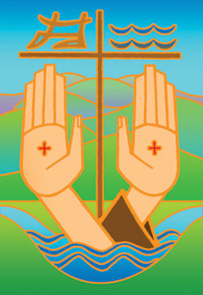

A Meditation on the Franciscan Coat of Arms
by Friar Jack Wintz, O.F.M.

If you go to any of our Franciscan friaries, churches or convents, you will almost always find the Franciscan Coat of Arms, painted somewhere, hanging on a wall or visible over a doorway. This holds true around the world as well as through the centuries.
The Franciscan coat of arms often consists of a cross with two arms crossing each other and nailed to a cross—or at least with a cross in the background. One arm is that of Christ; the other is that of St. Francis of Assisi. This image is a key identification badge for those who consider themselves followers of St. Francis.
This Franciscan coat of arms is an image worthy of our contemplation. The image is a true expression of both Jesus' and Francis' fervent style of love. We see in Jesus' crucified hand, first of all, God's incredible overflowing love for us. In Francis' wounded hand, in turn, we see the incredibly loving response of St. Francis to the burning love of God, who first loved us.
This is indeed something to ponder. All in all, the Franciscan coat of arms is a wonderful expression of the Franciscan (or Seraphic) style of love. Though few of us live up to this ideal, it calls us to something rare and splendid!
PrayerLord Jesus, you said, "No one has greater love than this: to lay down one's life for one's friends." Help us to contemplate the amazing intensity of your love, as symbolized by your crucified hand. Help us also to imitate you more fully, who first loved us, and to imitate St. Francis, who responded so fervently to the love so lavishly pour out upon him. Amen.